在众多左对齐表单布局设计的后台管理中，为何飞书独树一帜，采用居中布局样式？ 单从设计角度，比如小鹅通，信息全集中在左边，感觉视觉有点失衡。而类似飞书的居中设计，视觉会更平衡。设计时，需要保证产品结构层、表现层都要遵守基本的用户认知习惯。但是在设计中，首先人的视觉动线遵循F模型，同时根据行业相关信息可读性研究，眼动舒适角度为30度，都说明在表单的设计中我们不用过度的追求视觉平衡。
为什么飞书采用居中布局设计？其实仔细想想也是可以理解，设置类表单，数据项较少，相对比较简单，使用居中设计可以让用户更聚焦。 而其他大部分的表单设计，比如CRM、ERP、云产品、OA、项目研发、文档产、HR、BI等系统产品的录入类表单均采用的视觉偏左的设计方式，不管表单拓展多复杂的信息，都不会影响整体的一致性。
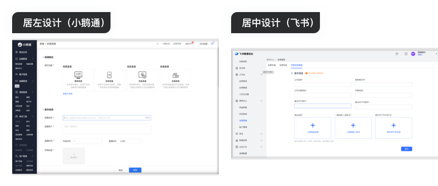销客CRM的筛选，可能因为行业属性，这个行业的筛选需要这种复杂且清晰的处理方式，这种筛选条件复杂且少见，节点清晰，层级关系清晰，排列整洁。既可以满足自定义的需求，子节点或者添加组合，也可以使用模版。是比较值得学习和研究的复杂筛选组件。
 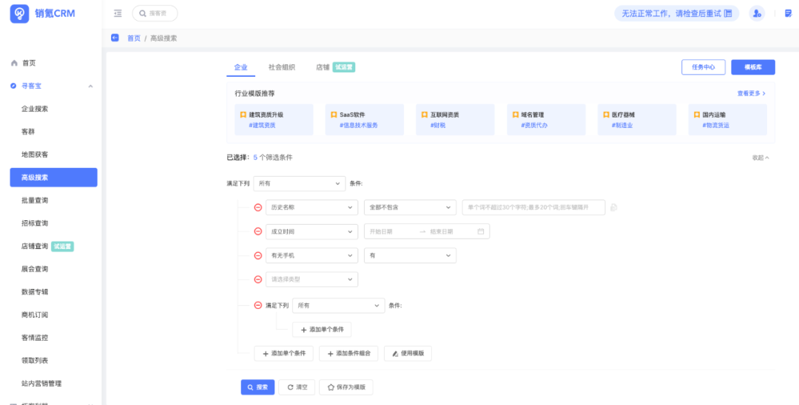
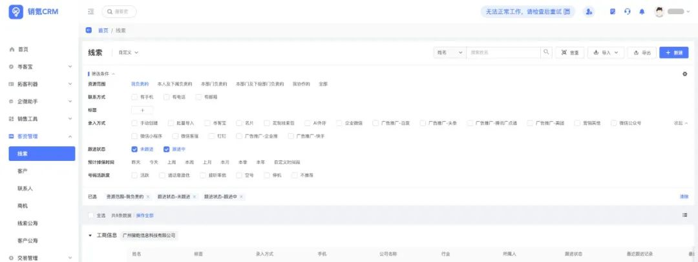
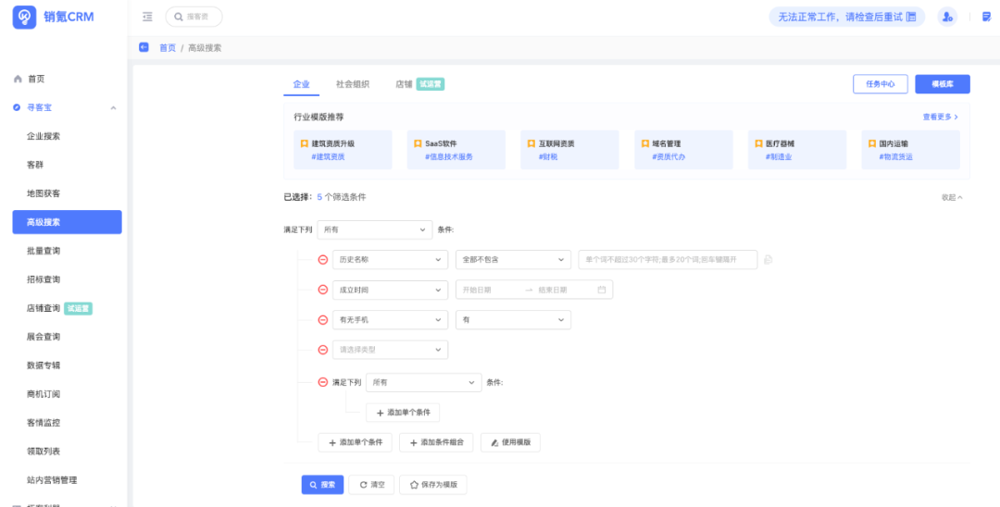
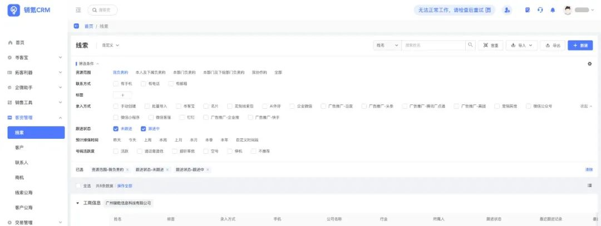
销客CRM的表格筛选，因筛选条件多且复杂，采用平铺的筛选方式，超出一行的筛选做收回展开处理，整个筛选条件也可以展开收起，同时还有自定义设置的弹窗设置，支持默认设置。用户可控空间大，用户体验感不错。值得推荐学习。
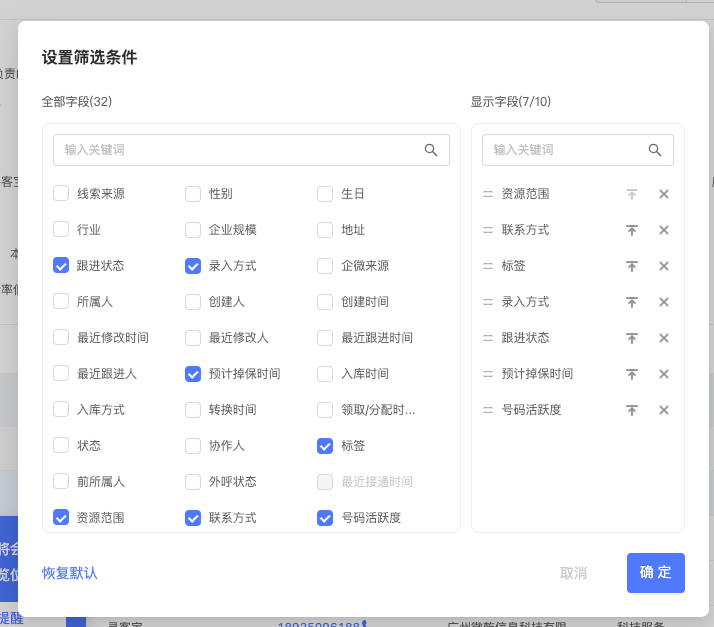抖音电商后台管理，筛选方式平铺矩阵式筛选方式基础增加了步骤，最大程度上放大了平铺矩阵式筛选方式的优点，可以承载多维的数据信息，避免检索条件疏漏的可用性问题。
同时还使用了分步骤的引导方式，解决来这种筛选方式大而全可能为用户带来繁杂的第一印象，都是重点等于没有重点，增加用户的决策时间的缺点，用户体验优化方案很巧妙，值得参考。
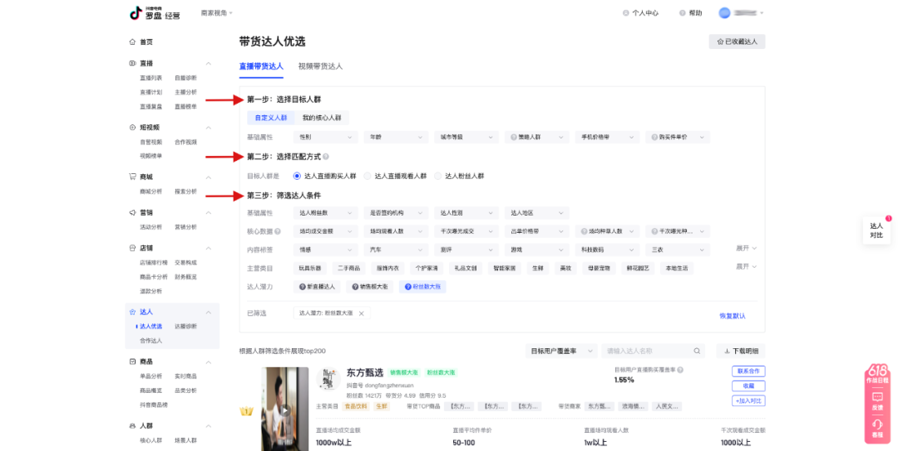关于后台批量操作按钮有赞的后台管理采用显性批量操作按钮，并且表格上方和下方都包含了批量操作按钮，再结合综合复杂分页器，也就能发现这样的设计的合理性。 同时可以满足表格上方的批量操作和表格底部的批量操作的需求。这样不管用户从上往下选还是从下往上选的场景都能覆盖；相比于隐形的批量操作容易造成记忆负担，增加学习成本，适合批量操作较低频的操作，功能不复杂的产品。
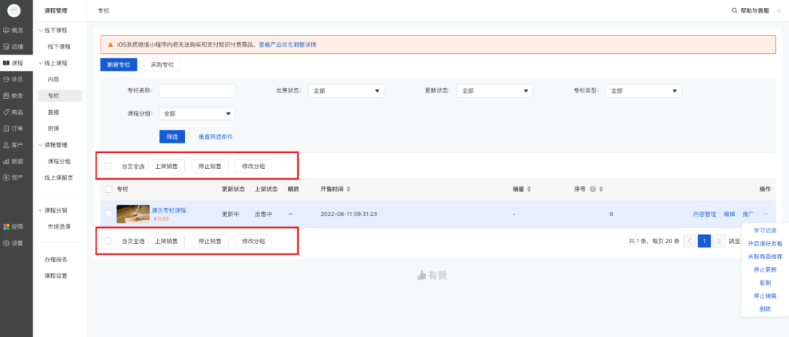在一些web端的某些特定的场景下，可以通过可视化展示设计师帮助用户理解信息，例如：神策数据的表单设置页面，图表类型和窗口尺寸，采用可视化+文字的设计，借助图片可视化提示，便于用户更好的理解信息，增加可用性的同时，也提高了用户的填写效率。
这个平台很多表单都喜欢用icon的方式来协助用户识别。
 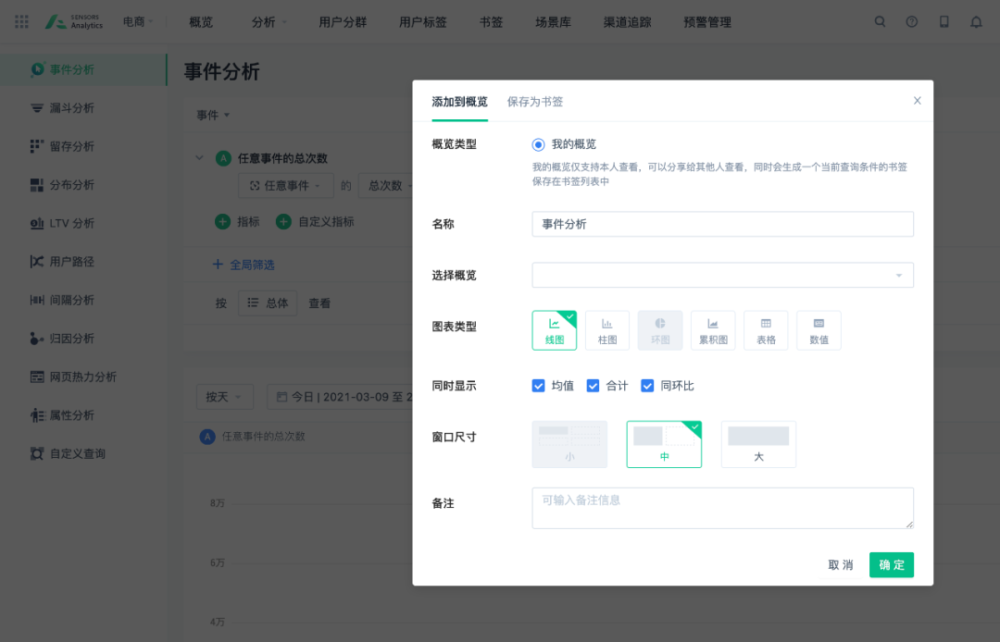
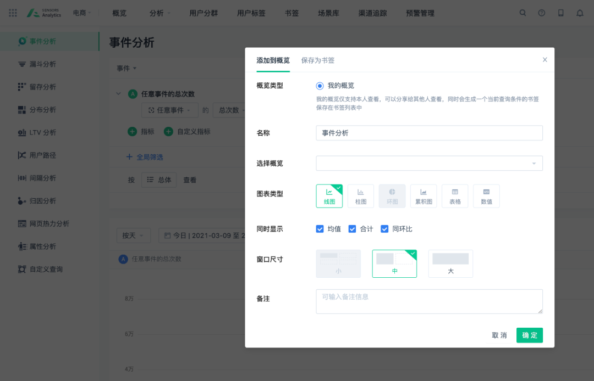
最近大家在体验一些娱乐产品的时候有没有发现一个相同的弹出提示：进入青少年模式，提示家长选择青少年模式。
在青少年模式中，为未成年的用户做了很好的内容过滤，还有时间锁、禁用时间等，家长可以设置监护密码。同时，用户在浏览内容时，如果画面涉及到危险动作时，页面底部会有浮层提示，可能存在风险，请注意辨别。这个小提示对用户起到积极引导的作用。
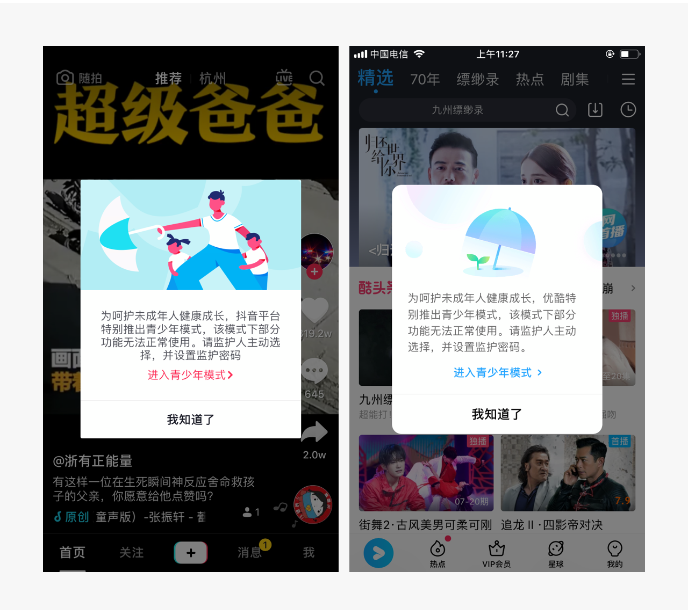在体验网易云音乐每日推荐功能时，列表中推荐符合用户口味的音乐，列表右上方还显示了一部分其他用户头像；点击头像转跳进入另一功能界面（音乐密友），该功能指在通过对音乐口味相似度来推荐好友。
音乐密友界面与其他主页面风格不同，以黑色为主色，重点强化口味相似度内容呈现，突出用户间的相同点达到促进社交的目的。其次右下角以齿轮左右滑动的交互效果来切换推荐的用户，在探索好友的过程中有种游戏的体验感，促进用户探索好友的时长，为社交提供更多可能性。
在进入平安口袋App首页，底部会出现一排平安业务的H5内嵌延展功能，页面上拉则会自动隐藏，下拉时，功能列表从底部弹出且可左右滑动，上拉时再次隐藏。
此交互的展示方式，既不影响产品的美观和使用，又有效的宣传了公司的其他业务。方便用户操作的同时，也不会影响其他内容的信息传达。（平安其他APP均使用了此类相同宣传方式，如：平安银行、平安保险、平安证券.…)
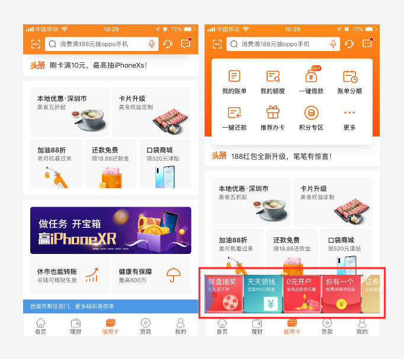现在有很多人有强迫症，就是看到消息红点会去把他标为已读，一些推送消息往往会忽略掉。微信读书对查看消息加了一步操作，底部ico引导提示，并且增加了趣味性。
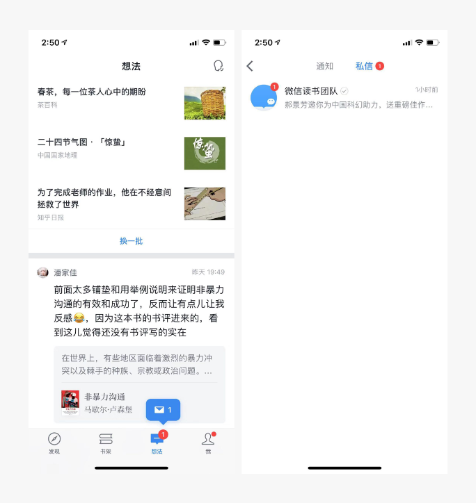